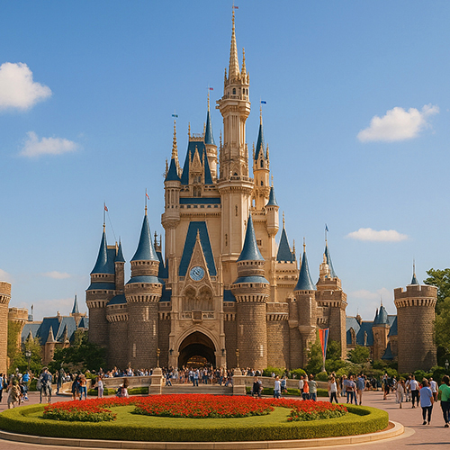

Tokyo Disneyland – Der magische Freizeitpark Japans mit aufregenden Attraktionen und bezaubernden Paraden
Tokyo Disneyland ist der bekannteste Freizeitpark Japans und eine der meistbesuchten Freizeiteinrichtungen weltweit. Direkt vor den Toren Tokyos in der Präfektur Chiba gelegen, erweckt dieser märchenhafte Park die beliebtesten Disney-Charaktere und Geschichten zum Leben – durch aufregende Attraktionen, spektakuläre Paraden und bezaubernde Kulissen, die Kinder und Erwachsene gleichermaßen begeistern.
Eine Fantasiewelt im Herzen Japans
Eröffnet 1983, empfängt Tokyo Disneyland jedes Jahr Millionen von Besuchern und bietet eine einzigartige Mischung aus klassischer Disney-Magie und japanischer Gastfreundschaft mit außergewöhnlicher Liebe zum Detail. Der Park ist in sieben Themenbereiche unterteilt, darunter:
- World Bazaar: Eine nostalgische Einkaufsstraße im Stil Amerikas zu Beginn des 20. Jahrhunderts.
- Adventureland: Erkunden Sie Dschungel, Flüsse und die Welt der Piraten der Karibik.
- Westernland: Erleben Sie den Wilden Westen mit Big Thunder Mountain und amerikanischer Grenzstimmung.
- Fantasyland: Das Land von Cinderella, Peter Pan und anderen zeitlosen Märchen.
- Tomorrowland: Ein futuristischer Bereich mit Weltraum- und Innovationsattraktionen.
- Critter Country & Toontown: Perfekt für Kinder und Familien, voller Spaß und Spielmöglichkeiten.
Warum Tokyo Disneyland besuchen?
Ob Sie nun ein langjähriger Disney-Fan sind oder einfach ein unvergessliches Familienerlebnis suchen – Tokyo Disneyland bietet Unterhaltung auf Weltklasse-Niveau und erstklassigen Service. Es geht nicht nur um Fahrgeschäfte – tägliche Paraden, saisonale Events und exklusive Produkte machen jeden Besuch unvergesslich. Tokyo Disneyland wird regelmäßig als einer der besten Freizeitparks der Welt bewertet und vereint westliche Kreativität mit japanischer Präzision.
Hauptattraktionen:
- Das ikonische Cinderella-Schloss im Zentrum des Parks
- Saisonale Events wie Halloween und Weihnachten
- Die Tagesparade „Dreaming Up!“ und die abendliche Elektrische Parade
- Exklusive Disney-Snacks für Japan und einzigartige Merchandise-Artikel
- Makellose Sauberkeit und unglaublich freundliches Personal
Planen Sie Ihren Besuch
In Urayasu, Chiba, nur 30 Minuten mit dem Zug vom Bahnhof Tokyo entfernt, ist Tokyo Disneyland leicht erreichbar und das ganze Jahr über geöffnet. Es wird empfohlen, Tickets im Voraus zu buchen, insbesondere während der Spitzenzeiten und Feiertage. Für ein vollständiges Disney-Erlebnis empfiehlt sich ein Aufenthalt in einem der offiziellen Hotels des Tokyo Disney Resorts.
Tokyo Disneyland ist nicht nur ein Ziel – es ist eine magische Reise durch Ihre Lieblingsgeschichten, neu interpretiert im einzigartigen japanischen Stil. Verpassen Sie nicht die Gelegenheit, diese Magie zu erleben!
Tags: Tokyo Disneyland, Freizeitparks Japan, Familienattraktionen Tokyo, Disney-Paraden, Urlaub in Tokyo, Disney-Fahrgeschäfte, magische Erlebnisse Japan, Unterhaltung Tokyo, Tokyo-Reiseführer
Planen Sie Ihren Besuch in Tokyo Disneyland?
Für ein wirklich intensives und informatives Erlebnis empfehlen wir die Buchung eines zertifizierten privaten Guides aus unserem Team. Alle unsere Guides sind offiziell von der japanischen Regierung anerkannt und bieten individuell angepasste Touren nach Ihren Interessen. Kontaktieren Sie Ihren ausgewählten Guide im Voraus, um die Verfügbarkeit zu prüfen und fachkundige Unterstützung für Ihre Reise zu erhalten.